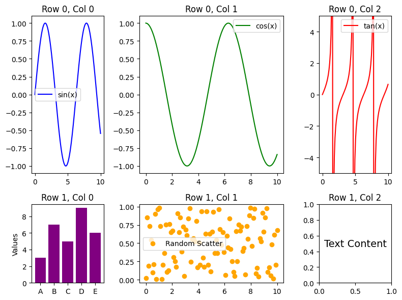
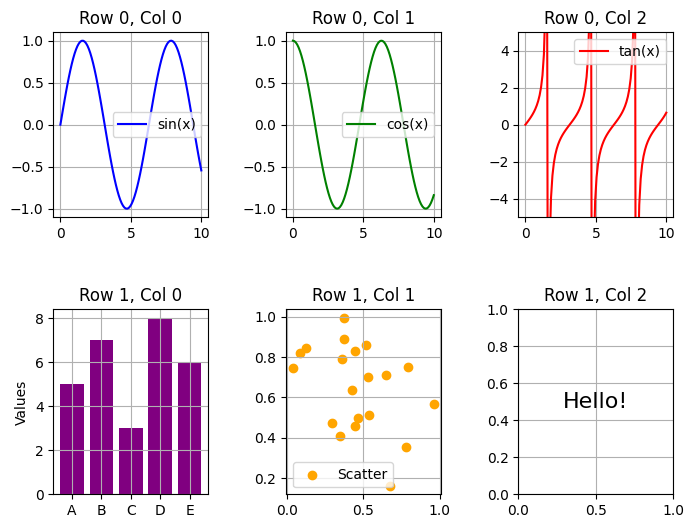
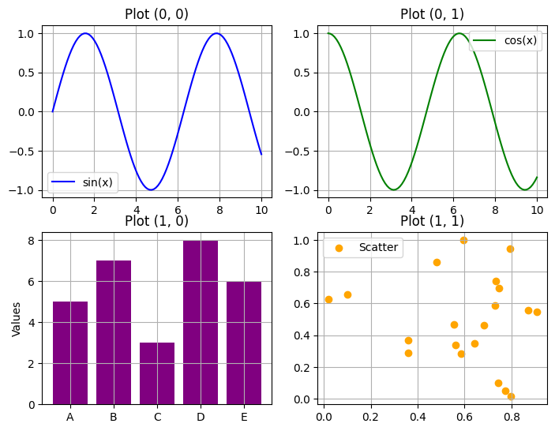

# Importing necessary libraries
import matplotlib.pyplot as plt
from matplotlib.gridspec import GridSpecKey Features and Parameters
Key Features of matplotlib.GridSpec
The matplotlib.GridSpec class offers extensive control over subplot layouts. Below are its key features and a comprehensive list of parameters with their functions.
Main Features:
- Allows flexible arrangement of subplots using customizable grids.
- Supports both fixed and relative sizing of grid cells.
- Enables nesting of grids within grids for complex layouts.
- Allows plots to span multiple grid cells, both horizontally and vertically.
- Fine-tunes spacing and alignment of subplots using adjustable padding and margins.
Explanation
A GridSpec object is defined by specifying the number of rows and columns. Each cell in the grid is referenced using zero-based indexing, similar to arrays in Python.
For example:
- GridSpec(2, 2) creates a 2x2 grid with four cells.
- Subplots are added using add_subplot(gs[row, col]), where row and col specify the cell position.
Spanning is achieved using slice notation:
- gs[0, :] spans all columns in the first row.
- gs[:, 0] spans all rows in the first column.
By combining these features, Matplotlib.GridSpec enables visually appealing layouts that are both flexible and precise.
Parameters of GridSpec
| Parameter | Description |
|---|---|
nrows |
Number of rows in the grid. |
ncols |
Number of columns in the grid. |
figure |
The figure object to which the grid belongs. |
width_ratios |
Relative widths of the columns as a list. |
height_ratios |
Relative heights of the rows as a list. |
wspace |
Horizontal spacing between columns as a fraction of the average column width. |
hspace |
Vertical spacing between rows as a fraction of the average row height. |
left |
Left margin of the entire grid (0 to 1, as a fraction of the figure width). |
right |
Right margin of the entire grid. |
top |
Top margin of the entire grid. |
bottom |
Bottom margin of the entire grid. |
subplot_spec |
Allows nesting grids within grids by specifying a region in the parent grid. |
gridspec_kw |
Dictionary of additional keyword arguments passed to GridSpec. |
Additional Notes:
- Spacing: The
wspaceandhspaceparameters control the spacing between subplots, influencing readability and aesthetics. - Margins: The
left,right,top, andbottomparameters define the spacing between the grid and the figure’s edges, improving layout consistency. - Ratios: Using
width_ratiosandheight_ratiosallows for grids with cells of different sizes, offering greater flexibility in plot design. - Nested Layouts: By using
subplot_spec, users can create nested grids for advanced layouts, enhancing the organization of complex visualizations.
Demonstrating All Parameters of matplotlib.GridSpec
Example 1: Basic Grid with nrows, ncols, and figure
# Creating a figure with a 2x3 grid
fig = plt.figure(figsize=(8, 6))
gs = GridSpec(nrows=2, ncols=3, figure=fig)
# Adding subplots
for i in range(2):
for j in range(3):
ax = fig.add_subplot(gs[i, j])
ax.set_title(f'Row {i}, Col {j}')
plt.show()Example 2: Using width_ratios and height_ratios
fig = plt.figure(figsize=(8, 6))
gs = GridSpec(nrows=2, ncols=3, figure=fig, width_ratios=[1, 2, 1], height_ratios=[2, 1])
for i in range(2):
for j in range(3):
ax = fig.add_subplot(gs[i, j])
ax.set_title(f'Row {i}, Col {j}')
plt.show()
Example 3: Controlling Spacing with wspace and hspace
fig = plt.figure(figsize=(8, 6))
gs = GridSpec(nrows=2, ncols=3, figure=fig, wspace=0.5, hspace=0.5)
for i in range(2):
for j in range(3):
ax = fig.add_subplot(gs[i, j])
ax.set_title(f'Row {i}, Col {j}')
plt.show()
Example 4: Adjusting Margins with left, right, top, and bottom
fig = plt.figure(figsize=(8, 6))
gs = GridSpec(nrows=2, ncols=2, figure=fig, left=0.1, right=0.9, top=0.9, bottom=0.1)
for i in range(2):
for j in range(2):
ax = fig.add_subplot(gs[i, j])
ax.set_title(f'Plot ({i}, {j})')
plt.show()
Example 5: Nested Grids using subplot_spec
fig = plt.figure(figsize=(8, 8))
outer_grid = GridSpec(2, 1, figure=fig)
# Main Plot
ax_main = fig.add_subplot(outer_grid[0, 0])
ax_main.set_title('Main Plot')
# Nested Grid
inner_grid = GridSpec(1, 3, figure=fig)
for i in range(3):
ax = fig.add_subplot(inner_grid[0, i])
ax.set_title(f'Nested {i}')
plt.show()